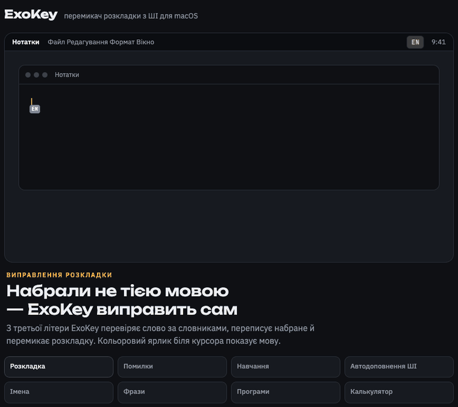
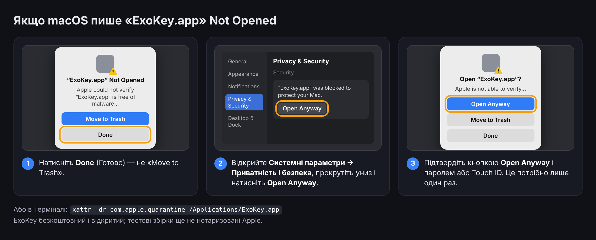

Для macOS · безкоштовно · відкритий код
ghbdsn
Пишіть, не дивлячись на розкладку
ExoKey сам виправляє текст, набраний не тією мовою, ловить помилки й підказує наступні слова. Англійська, українська, російська. Усе працює на вашому Mac.

Можливості
Дев’ять дрібниць, які економлять хвилини щодня
Приватність
Ваш текст не залишає ваш Mac
ExoKey бачить клавіші, щоб виправляти розкладку. Тому ми зробили так, щоб нікуди нічого не надсилалося.
Встановлення
Дві хвилини — і готово

Або через Homebrew
brew tap yan/tap https://git.exokey.top/yan/homebrew-tap brew trust yan/tap brew install --cask exokey
Оновлення — brew upgrade --cask exokey. Кроки 2 і 3 потрібні й тут.
Гарячі клавіші
Усе під пальцями
FAQ
Часті запитання
Родина Exo
Інші програми Exo
Спробуйте ExoKey
Безкоштовно. Якщо ExoKey вам знадобився, розкажіть про нього друзям — це допомагає проєкту рости.